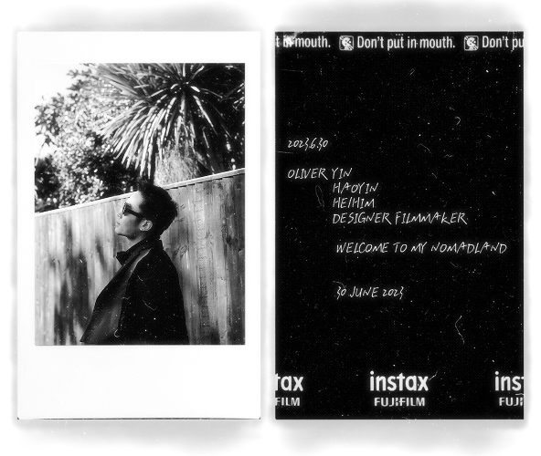

Ageing Well in Place
Inclusive services, environments and technologies that support independence, connection and dignity in later life.

To me, design is never merely about creating objects or interfaces; it is a methodology for understanding complex social systems and translating cutting-edge technology into meaningful human experiences. From film and television production and communication to service design and interdisciplinary innovation, my academic and professional journey has consistently affirmed a belief: designers should bridge technology, society, and culture to address pressing global challenges.
In my PhD research, I plan to explore how artificial intelligence, multimodal interaction, wearable computing, and information visualization can contribute to preventive healthcare and healthy aging. Specifically, I aim to design adaptive information systems that integrate physiological sensing, machine learning, and multisensory interaction, in order to identify cognitive decline at an earlier stage and continuously enhance users' long-term engagement. Beyond technical development, I am also committed to establishing a design methodology that ensures intelligent systems are interpretable, ethically sound, and genuinely human-centered.
Ultimately, I hope my research will help construct a future vision: intelligent technology not only enhances efficiency, but also upholds human dignity, promotes social inclusion, and advances public well-being. I believe design should not only address current problems, but also anticipate future challenges, shaping technology that truly serves people with empathy, responsibility, and imagination.

London, UK
MA, Service Design · 2022-2023
Hangzhou, CN
BFA, Film & TV Cinematography & Production (TV Cameraing) · 2018-2022
Beijing, CN · Full-time
Design Researcher & Senior Manager, Elderly Care Services Lab · 2023-Present
Shanghai, CN
Learning and Development Consulting Business Marketing Intern · 2021
Gold & Silver Winner · Aug 2026
Silver Winner · Jul 2026
Committee Member · 2026-2028
Membership · 2025-2026
Merit Award for Participation · 2023
Scholarship Recipient · Jun 2022
Remote, Online Course
TU-E3170 Facilitating Change Course · Apr-May 2026
Remote, Online Course
AI and Digital Transformation in Government · Jan-Dec 2025
London, UK
Entrepreneurship Journey, Minor MBA Program · Oct 2022-Jun 2023
Remote · 3 ECTS Credits
Online Course in Education Curriculum · Jun-Aug 2022
Remote
Short-term Researcher on Human Rights and Computation · Mar-May 2022
My research investigates how service design can connect people, technologies, environments and communities to support ageing, preventive health and everyday wellbeing.
Inclusive services, environments and technologies that support independence, connection and dignity in later life.
Designing experiences that encourage early awareness, proactive behaviour and everyday health management.
Exploring sensory experience as a design resource for perception, memory, engagement and wellbeing.
Investigating how AI and emerging technologies can enable personalised, adaptive and human-centred services.
Teaching is part of my design practice: helping designers turn ideas into structured, research-informed and meaningful outcomes.
“Design Futures & Shaped Vision” International Summer Program – Youth Mentor · 06-07, 2026
Beijing, CN
Worked with Dr John Stevens, Senior Tutor · 07-08, 2024
Beijing, CN
Worked with Maria Dada, Course Leader · 08-09, 2025
Beijing, CN
PUBLICATIONS